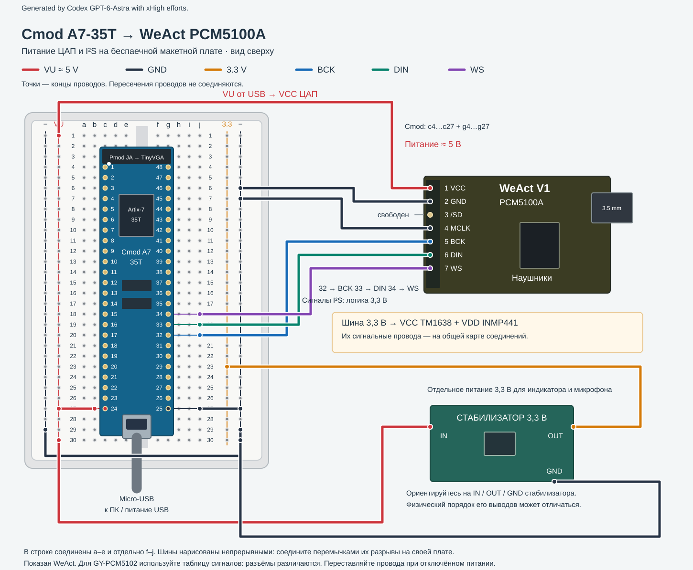

Generated by Codex GPT-6-Astra with xHigh efforts.
Cmod A7-35T + TinyVGA: сборка на макетной плате и первый запуск
Конфигурации с TM1638: cmod_a7_35_tiny_vga_codex, cmod_a7_35_tiny_vga_no_pll_codex · Digilent Cmod A7-35T, ревизия B · подготовлено 16 ноября 2026 года.
English instructions · Markdown · Сведения о реализации
Конфигурация соединяет TinyVGA через разъём Pmod, микрофон INMP441 с интерфейсом I²S, модуль TM1638 LED&KEY и один из двух звуковых модулей, описанных ниже. TM1638 питается от 3,3 В и подключается непосредственно к FPGA. Девять сигнальных проводов периферии подключаются к последовательным выводам DIP 26–34. Номера выводов DIP, контактов Pmod и шариков корпуса FPGA — разные обозначения; пользуйтесь таблицами.
Код и временные соотношения сигналов проверены моделированием. Графический пример и пример микрофонного монитора также прошли синтез, трассировку и создание файлов конфигурации в Vivado 2026.1 с положительным запасом по setup/hold для путей с временными ограничениями. Исходный XDC не задаёт внешние задержки ввода-вывода. Физическая сборка, совместимость монитора и воспроизведение звука ещё требуют проверки на плате.
Частоты и поведение MMCM ниже относятся к основному варианту cmod_a7_35_tiny_vga_codex. Дополнительный вариант cmod_a7_35_tiny_vga_no_pll_codex использует тот же монтаж; его отличия приведены в разделе TinyVGA.
Для двух конфигураций без TM1638 перед монтажом прочитайте [отличия ниже](assembly_ru.html#no-tm1638): обе кнопки платы используются работой, внешнего индикатора нет, а ветвь TM1638 на рисунках исключается.
1. Компоненты и размещение
- Digilent Cmod A7-35T, не вариант 15T; кабель Micro-USB с передачей данных; компьютер с Vivado и поддержкой Artix-7.
- Макетная плата, короткие перемычки и мультиметр. Если модуль закрывает контактные группы, используйте две макетные платы или переходник DIP. Оба ряда выводов должны оставаться доступными и электрически раздельными.
- TinyVGA Pmod от mole99, два бита на цвет; VGA-кабель и монитор. Digilent Pmod VGA, занимающий два разъёма Pmod, имеет другую распиновку и напрямую его не заменяет.
- Микрофонная плата INMP441 с обозначениями VDD, GND, SCK, WS, SD и L/R.
- Обычный модуль TM1638 LED&KEY: восемь кнопок, восемь светодиодов, восемь семисегментных разрядов; питание 3,3 В. Питание модуля и все подтяжки сигнальных линий подключаются к 3,3 В; преобразователь уровней не устанавливается.
- Стабилизированный источник 3,3 В для TM1638 и INMP441, например плата стабилизатора с малым падением напряжения, питаемая от VU. Проверьте допустимый входной диапазон, запас по падению напряжения, допустимый ток и нагрев при максимальной яркости индикатора с учётом микрофона; установите требуемые производителем конденсаторы. Произвольный модуль «AMS1117» не обязательно обеспечит 3,3 В с любым USB-кабелем.
- Один ЦАП: WeAct I2S Earphone Module PCM5100A Stereo HP AMP 32 Ω 160 mW либо GY-PCM5102 PCM5102A в формате pHAT. Наушники подключаются к усиленному выходу WeAct; линейный выход GY требует активных колонок или отдельного усилителя.
Разместите Cmod так, чтобы противоположные выводы не замыкались контактными полосами макетной платы. Найдите вывод 1 по маркировке и рисунку 8.1 руководства Digilent, затем 24 = VU, 25 = GND, 26–34. Ориентируйтесь на номера: вид снизу зеркален виду сверху. До подключения USB проверьте соединения мультиметром.
Кабель TM1638 расположите возле 26–28, микрофон возле 29–31, ЦАП возле 32–34. Не закрывайте акустическое отверстие микрофона и не помещайте его вплотную к динамику. Рисунок показывает электрические соединения, а не точные координаты отверстий макетной платы.

TinyVGA: покупка в розницу или сборка в JLCPCB
TinyVGA — адаптер RGB222 с одним разъёмом Pmod, разработанный Leo Moser (mole99); исходники находятся в репозитории TinyVGA. В именах конфигураций tiny_vga обозначает именно эту плату; VGA остаётся названием стандарта видеосигнала и общего модуля развёртки peripherals/vga.sv.
Розница: готовую плату можно заказать в магазине Tiny Tapeout — Tiny VGA Pmod. Карточка товара ссылается на проект mole99 и указывает, что пайка не нужна. Актуальные наличие, итоговую цену и доставку в вашу страну проверяйте в магазине. Источник проверен 17 ноября 2026 года.
JLCPCB: используйте инструкцию разработчика по заказу и производственные файлы одной ревизии a081ae63. Скачайте все три файла из этой ревизии:
| Файл | Назначение |
|---|---|
| GERBER-tiny-vga.zip | Изготовление печатной платы |
| BOM-tiny-vga.csv | Компоненты и их номера LCSC |
| CPL-tiny-vga.csv | Координаты, углы и сторона установки компонентов |
- На странице расчёта JLCPCB загрузите Gerber ZIP, проверьте изображение платы, выберите количество и параметры изготовления.
- Включите PCB Assembly и загрузите BOM и CPL. В данном CPL все компоненты размещены на верхней стороне (top). Порядок загрузки Gerber/BOM/CPL описан в FAQ по сборке JLCPCB.
- Проверьте подбор и наличие каждого компонента. В BOM включены J1: разъём Pmod, C2935938 и J2: разъём VGA, C138387. Убедитесь, что оба выводных разъёма и подходящая услуга их монтажа включены в расчёт; JLCPCB поддерживает выводной монтаж. Если намеренно исключаете разъёмы, купите и припаяйте их сами. Заказ только печатных плат не включает компоненты.
- Сверьте размещение и ориентацию разъёмов с исходной платой и фотографиями. Подтвердите все нужные компоненты: одной загрузки BOM недостаточно. См. правила подтверждения компонентов JLCPCB.
- Перед оформлением проверьте полный состав сборки, стоимость плат и компонентов, доставку и налоги. Сохраните номер ревизии проекта вместе с заказом.
2. Питание: сначала подключите и проверьте его
- Перед перестановкой проводов отключите USB и все источники питания. Аналоговые выводы 15/16, SRAM и flash в этой сборке не используются.
- При первом запуске питайте Cmod только через USB. По документации Digilent, при подключённом USB на VU, вывод 24, присутствует напряжение USB с падением на диоде — примерно 5 В. Вывод 25 — земля. Не подключайте внешний источник к VU одновременно с USB.
- Соедините вывод 25 с общей шиной земли. Подключите к ней GND всех модулей. Проверьте мультиметром разрывы шин макетной платы, прежде чем соединять их перемычками.
- Подайте питание VU на проверенный вход 5 V/VIN выбранного ЦАП и вход стабилизатора 3,3 В для периферии. Учитывайте суммарный ток FPGA, индикатора и звука. При просадке напряжения или отключении USB используйте подходящий USB-источник либо отдельный стабилизированный источник для периферии. Во втором случае отсоедините провод VU от питания периферии; земли оставьте общими.
- Подключите выход стабилизатора 3,3 В к VCC TM1638 и VDD INMP441. Стабилизатор должен поддерживать 3,3 В при максимальной яркости индикатора. Не соединяйте этот выход с выходом 3,3 В Cmod на Pmod: TinyVGA получает своё питание непосредственно через Pmod.
- Все подтяжки сигнальных линий TM1638 подключаются к VCC модуля = 3,3 В. Короткими проводами соедините DIO, CLK и STB непосредственно с DIP 26, 27 и 28 соответственно. При таком прямом подключении питание TM1638 должно оставаться 3,3 В; не подключайте VCC или подтяжки модуля к VU/5 В.
- До установки модулей измерьте VU и 3,3 В, проверьте общую землю; затем повторно измерьте 3,3 В при включённом индикаторе. Не используйте сигнальные выводы FPGA как питание. Сигналы 5 В нельзя подключать к FPGA напрямую.
Источники: питание и разъёмы Cmod. Авторы библиотеки TM1638 сообщают об успешной работе с питанием и логическими уровнями 3,3 В. В этой сборке используется такое подключение; при первом запуске проверьте кнопки и индикатор своего модуля. Документация Titan TM1638 задаёт электрические характеристики при 4,5–5,5 В и не гарантирует их при 3,3 В.
3. Компактная распиновка периферии
Имена в XDC сохранены дословно. Все сопоставления функций находятся в board_specific_top.sv.
| Вывод DIP | Порт XDC/верхнего модуля | Шарик FPGA | Назначение | Куда подключать |
|---|---|---|---|---|
| 26 | pio26 | R3 | Двунаправленные данные TM1638 | DIO TM1638 напрямую, логика 3,3 В |
| 27 | pio27 | T3 | Тактовый сигнал TM1638 | CLK TM1638 напрямую, логика 3,3 В |
| 28 | pio28 | R2 | Строб TM1638 | STB TM1638 напрямую, логика 3,3 В |
| 29 | pio29 | T1 | Битовый тактовый сигнал микрофона | SCK INMP441 |
| 30 | pio30 | T2 | Выбор слова микрофона | WS INMP441 |
| 31 | pio31 | U1 | Вход данных микрофона | SD INMP441 |
| 32 | pio32 | W2 | Битовый тактовый сигнал ЦАП | BCK WeAct или GY |
| 33 | pio33 | V2 | Данные на ЦАП | DIN WeAct или GY |
| 34 | pio34 | W3 | Тактовый сигнал слов ЦАП | WS WeAct или LCK/LRCK GY |
L/R микрофона INMP441 соедините с землёй, выбирая левый канал. VDD подключите к 3,3 В, не к VU. Не путайте SCK и SD: SCK идёт из FPGA, SD возвращает данные в FPGA. Документация INMP441 описывает 24-битный выход I²S; верхний модуль принимает знаковый отсчёт левого канала.
При тактовой частоте системы 100 МГц существующий приёмник формирует около 3,125 МГц SCK и 48,828125 кГц WS. Именно эти значения следует ожидать при измерении, а не ровно 3,072 МГц и 48 кГц.
4. TinyVGA в разъёме Pmod
Совместите нумерацию контактов TinyVGA и разъёма JA на Cmod. Контакты 5/11 — земля, 6/12 — 3,3 В. Проверьте ориентацию до подачи питания. При необходимости используйте только прямой Pmod-удлинитель без перестановки проводов.
| Контакт JA | Порт XDC/верхнего модуля | Шарик FPGA | Сигнал TinyVGA |
|---|---|---|---|
| 1 | ja[0] | G17 | R1, старший бит красного |
| 2 | ja[1] | G19 | G1, старший бит зелёного |
| 3 | ja[2] | N18 | B1, старший бит синего |
| 4 | ja[3] | L18 | VS, кадровая синхронизация |
| 7 | ja[4] | H17 | R0, младший бит красного |
| 8 | ja[5] | H19 | G0, младший бит зелёного |
| 9 | ja[6] | J19 | B0, младший бит синего |
| 10 | ja[7] | K18 | HS, строчная синхронизация |
Получается 64 цвета, RGB222. Во время гашения верхний модуль выдаёт чёрный цвет. Видимая область — 640 × 480, полная развёртка — 800 × 525. Частота пикселей — 25 МГц, строк — 31,25 кГц, кадров — примерно 59,524 Гц. Это существующий в репозитории вариант с 25 МГц, а не номинальные 25,175 МГц VGA; совместимость следует проверить на вашем мониторе.
MMCM внутри FPGA преобразует 12 МГц генератора платы в 100 МГц. Переделывать peripherals/vga.sv не требуется. Основание распиновки — таблица разработчика TinyVGA.
TinyVGA без PLL и MMCM
В меню выбора платы укажите cmod_a7_35 → cmod_a7_35_tiny_vga_no_pll_codex. Вся FPGA тактируется непосредственно от 12 МГц через BUFG. Лабораторная работа получает координаты 305 × 480; полная развёртка — 382 такта на строку и 525 строк на кадр. Частота строк — 31,413613 кГц, кадров — 59,835453 Гц. Горизонтальные интервалы «активная область / передний порог / синхроимпульс / задний порог» — 305/8/46/23 такта, вертикальные — 480/10/2/33 строки. Оба синхроимпульса отрицательные. Интервалы приближены к таймингам IBM для 640×480 с округлением до целых тактов 12 МГц.
Монитор может определить режим как 640×480, но независимых отсчётов цвета в строке только 305. На экране 4:3 горизонтальные пиксели примерно вдвое шире вертикальных. Работы, рассчитанные на 640 столбцов или квадратные пиксели, могут потребовать адаптации. Приём сигнала и положение изображения нужно проверить на физическом мониторе. Подробности — в описании конфигурации без PLL.
Монтаж и питание остаются прежними. ЦАП: BCK = 3 МГц, LRCK = 46,875 кГц; микрофон: SCK = 750 кГц, WS = 11,71875 кГц. Частота дискретизации и полоса микрофона уменьшаются; каждый его отсчёт удерживается на протяжении нескольких кадров ЦАП. BTN0 снимает сброс через три такта 12 МГц без ожидания захвата. В отчётах Vivado должны быть одна частота 12 МГц и ноль элементов PLL/MMCM. Внутренняя PLL ЦАП используется по-прежнему: эта конфигурация исключает менеджер тактирования FPGA.
5. Вариант ЦАП A: WeAct PCM5100A с усилителем наушников
Питание ЦАП: USB → VU Cmod (DIP 24) → VCC WeAct (контакт P1.1). Земля: DIP 25 Cmod → GND WeAct (контакт P1.2). На VU около 5 В с учётом падения на диоде цепи USB. Стабилизатор на модуле питает его цепи 3,3 В; сигналы I²S от FPGA также имеют логические уровни 3,3 В. Отдельный стабилизатор периферии питает TM1638 и INMP441.
В официальной схеме WeAct V1.0 показан семиконтактный разъём. Проверяйте маркировку своей платы: вид с обратной стороны меняет кажущийся порядок контактов.
| Контакт P1 WeAct | Обозначение | Соединение |
|---|---|---|
| 1 | VCC | Шина питания периферии 5 В/VU с учётом допустимого тока |
| 2 | GND | Общая земля |
| 3 | /SD | Оставить неподключённым: в схеме V1.0 CTRL подтянут к 3,3 В; заземление выключает звук |
| 4 | MCLK / MC | Земля для трёхпроводного I²S |
| 5 | BCK / BC | DIP 32 Cmod |
| 6 | DIN / DI | DIP 33 Cmod |
| 7 | WS | DIP 34 Cmod |
На плате находятся стабилизатор 3,3 В, PCM5100A и усилитель наушников HT97226. Заводская схема выбирает I²S; перемычку деэмфазиса оставьте в исходном выключенном положении. Начните с тихого сигнала и подключите наушники к гнезду. Вход /SD не является SD микрофона: не соединяйте их и не подавайте на /SD напряжение 5 В.
Размещение на макетной плате и перемычки

Нажмите на рисунок, чтобы открыть его в полном размере. Это вид сверху с подробным подключением ЦАП; сигнальные соединения TM1638 и микрофона приведены на общей карте выше. WeAct и стабилизатор расположены рядом с макетной платой и соединены проводами. Изображения компонентов упрощены; порядок P1 WeAct соответствует изображению и схеме производителя. Расположение выводов стабилизатора зависит от модели: найдите IN, OUT и GND на своей плате.
На макетной плате с 30 строками установите левый ряд Cmod в c4–c27, правый в g4–g27, разъёмом Pmod вверх и USB вниз. Это соответствует расстоянию 0,6 дюйма между рядами выводов. DIP 1 находится в c4, DIP 48 — в g4, DIP 24/VU — в c27, DIP 25/GND — в g27. Сверьтесь с маркировкой первого вывода и рисунком DIP в документации Digilent. В каждой строке a–e соединены между собой, f–j — отдельно; через центральный зазор соединения нет. Поэтому b27 даёт доступ к VU, а j27 — к земле. Выводы должны входить без усилия, а свободные отверстия рядом с модулем оставаться доступными.
Обозначьте левую положительную шину VU, правую — 3,3 В, обе отрицательные — GND. На рисунке шины непрерывны; если у вашей платы есть разрывы, соедините участки каждой шины перемычками после проверки мультиметром. Красная и оранжевая положительные шины остаются раздельными. В таблице указаны номера строк макетной платы; номера выводов DIP подписаны отдельно.
| Откуда | Куда | Назначение |
|---|---|---|
| b27 (DIP 24/VU Cmod) | Левая шина VU, строка 27 | Питание периферии от USB |
| j27 (DIP 25/GND Cmod) | Правая шина GND, строка 27 | Общая земля |
| Левая шина GND, строка 29 | Правая шина GND, строка 29 | Соединение шин земли |
| Левая шина VU, строка 1 | WeAct P1.1 VCC | Питание ЦАП и усилителя наушников |
| Правая шина GND, строка 6 | WeAct P1.2 GND | Земля ЦАП |
| Правая шина GND, строка 7 | WeAct P1.4 MCLK | Использование внутреннего тактирования от BCK |
| j20 (DIP 32 Cmod) | WeAct P1.5 BCK | Битовый тактовый сигнал I²S |
| j19 (DIP 33 Cmod) | WeAct P1.6 DIN | Звуковые данные I²S |
| j18 (DIP 34 Cmod) | WeAct P1.7 WS | Тактовый сигнал слов I²S |
| Левая шина VU, строка 30 | IN стабилизатора периферии | Вход стабилизатора |
| Правая шина GND, строка 30 | GND стабилизатора периферии | Земля стабилизатора |
| OUT стабилизатора, 3,3 В | Правая шина 3,3 В, строка 23 | Питание TM1638 и INMP441 |
Оставьте WeAct P1.3 /SD неподключённым. Подключите VCC TM1638 и VDD INMP441 к правой шине 3,3 В, их земли — к GND. Допустимый ток и тепловой режим стабилизатора должны соответствовать обеим нагрузкам. Проверьте напряжения до установки модулей и повторно под нагрузкой. При подключённом USB нельзя подключать внешний источник к VU. Если используется отдельное питание периферии, сначала отсоедините провод от VU, как описано в разделе 2.
6. Вариант ЦАП B: GY-PCM5102 / PCM5102A в формате pHAT
Под названием GY продаются разные печатные платы. Название товара не определяет однозначно порядок контактов и номера паяных перемычек. Подключайтесь по обозначениям сигналов, проверив схему стабилизатора и перемычки конкретного модуля; номера разъёма WeAct здесь неприменимы.
Если у GY подтверждён вход VIN/5V через стабилизатор, замените WeAct на рисунке следующим образом: VU → VIN/5V, GND → GND, DIP 32 → BCK, DIP 33 → DIN, DIP 34 → LCK/WS, GND → SCK/MCLK. Установите управляющие сигналы по таблице ниже. Вывод 3V3 подключается согласно документированной схеме питания 3,3 В конкретной платы.
| Обозначение GY | Соединение или состояние |
|---|---|
| VIN / 5V | Шина 5 В только при подтверждённом входе через стабилизатор |
| 3V3, если имеется | По схеме питания конкретной платы; никогда не подавать сюда 5 В |
| GND | Общая земля |
| BCK / BCLK | DIP 32 Cmod |
| DIN / DATA | DIP 33 Cmod |
| LCK / LRCK / WS | DIP 34 Cmod |
| SCK / MCLK | Земля: внутренний PLL ЦАП использует BCK |
| XSMT / XMT | Высокий уровень от логической шины 3,3 В ЦАП для включения звука; проверьте имеющуюся подтяжку |
| FMT | Низкий уровень: I²S |
| FLT | Низкий уровень: фильтр с обычной задержкой |
| DEMP | Низкий уровень: деэмфазис выключен |
Перед добавлением проводов осмотрите паяные перемычки. Нельзя замыкать на землю вывод, уже соединённый перемычкой с питанием. Ревизия вашей GY-платы не задана, поэтому номера перемычек и физический порядок разъёма не предполагаются. Электрические настройки взяты из документации TI PCM510xA.
Гнездо или площадки L/R GY обычно являются линейными выходами. Подключайте активные колонки либо отдельный усилитель наушников. Сам PCM5102A не рассчитан на непосредственное управление наушниками 32 Ω: TI указывает линейную нагрузку от 1 кΩ. Не соединяйте левый и правый выходы друг с другом.
Оба варианта работают с одной конфигурацией FPGA и тремя сигнальными проводами. Существующий передатчик помещает монофонический 16-битный sound в оба канала 32-битных слотов I²S, начиная на один бит позже изменения LRCK. Ожидаемые частоты: BCK 3,125 МГц, LRCK 48,828125 кГц, 64 периода BCK на стереокадр. Провод внешнего MCLK не нужен; неиспользуемый выход MCLK передатчика остаётся внутри FPGA.
7. Кнопки, индикатор, GPIO и сброс
Первые четыре пункта относятся к конфигурациям с TM1638; подключение без TM1638 описано ниже.
- BTN0 сбрасывает MMCM и схему. Потеря захвата частоты также вызывает сброс; после восстановления захвата сброс снимается через три фронта системного тактового сигнала. При потере захвата нажмите и отпустите BTN0 для перезапуска MMCM.
- BTN1 — кнопка лабораторной работы. По умолчанию её состояние объединяется по ИЛИ с
key[0]; S1–S8 TM1638 соответствуютkey[0]–key[7]. - Движковых переключателей нет. Эти же кнопки TM1638 подаются на
sw[0]–sw[7]как входы без фиксации. Для длительного удержания комбинации кнопки нужно держать нажатыми либо отдельно адаптировать ввод лабораторной работы. - Два светодиода Cmod дублируют младшие два бита лабораторных светодиодов. TM1638 выводит восемь бит и восемь разрядов. Поддерживаются и общие макросы конкатенации; альтернативный порядок описан в сведениях о реализации.
- RGB-светодиод с активным низким уровнем горит красным во время сброса, зелёным при работе; синий выключен. Он показывает состояние тактирования и сброса, а не исправность всей периферии.
gpio[0]–gpio[7]соответствуют DIP 1–8 и не пересекаются с периферией на 26–34. Оставьте их свободными, если лабораторная работа их не использует.- Встроенный USB-UART передаёт данные в FPGA через
uart_txd_in, в компьютер — черезuart_rxd_out. Дополнительный UART-кабель не нужен.
Конфигурации без TM1638
В группе cmod_a7_35 меню плат выберите одну из двух дополнительных конфигураций:
| Конфигурация | Частота и выход TinyVGA |
|---|---|
| cmod_a7_35_tiny_vga_no_tm1638_codex | 100 МГц, MMCM; 640×480 при 59,524 Гц |
| cmod_a7_35_tiny_vga_no_pll_no_tm1638_codex | 12 МГц, только BUFG; 305×480 при 59,835453 Гц |
Не устанавливайте TM1638, его провода питания и три сигнальных провода к DIP 26–28. Эти сигналы отсутствуют в портах верхнего уровня FPGA, а соответствующие строки исходного XDC остаются закомментированными. Оставьте DIP 26–28 свободными. Рисунки показывают сборку с TM1638; для этих двух конфигураций исключите соответствующую ветвь. Подключение TinyVGA, INMP441 на DIP 29–31, ЦАП на DIP 32–34, USB-UART и GPIO на DIP 1–8 сохраняется. При использовании микрофона оставьте его стабилизированное питание 3,3 В. Питание ЦАП и соединение MCLK с GND остаются прежними.
BTN0 → key[0], BTN1 → key[1]; led[0] → LED0 платы, led[1] → LED1 платы. Нажатие соответствует единице. Каждая кнопка проходит через два регистра синхронизации; подавление механического дребезга остаётся задачей лабораторной работы. Ширина key и led равна двум независимо от макросов конкатенации TM1638. Для совместимости с работами, использующими sw, sw[1:0] дублирует две кнопки без фиксации, а sw[7:2] равно нулю; движковых переключателей нет.
Ни одна кнопка не сбрасывает схему. Сброс устанавливается при конфигурировании FPGA и снимается через три системных такта, после захвата MMCM там, где она используется. Потеря захвата MMCM также вызывает сброс. Для перезапуска повторно запрограммируйте FPGA или выключите и включите питание; вариант без PLL не определяет потерю тактирования. RGB по-прежнему показывает сброс и работу. Семисегментного индикатора нет, контроллер TM1638 не создаётся даже при наличии INSTANTIATE_TM1638_BOARD_CONTROLLER_MODULE в работе. Выходы индикатора lab_top оставлены неподключёнными. Внутренний параметр совместимости w_digit=8 предотвращает некорректные приведения нулевой ширины и срезы в существующих работах; он не создаёт индикатор или внешние выводы. Работы только с индикатором не выводят видимые цифры; задания с более чем двумя независимыми органами управления требуют адаптации.
В шаге 3 первого запуска вместо установки TM1638 проверьте две кнопки и два светодиода платы подходящей базовой работой. Для варианта 12 МГц используйте приведённые выше частоты видео и звука без PLL. Описания конфигураций: с MMCM, без PLL.
8. Сборка проекта и последовательный запуск
В каталоге лабораторной работы запустите обычный выбор платы и укажите cmod_a7_35 → cmod_a7_35_tiny_vga_codex. Скрипт выбирает Vivado, кристалл xc7a35tcpg236-1 и устройство программатора xc7a35t_0.
cd labs/2_graphics/2_1_rectangle_ellipse_parabola
./06_choose_another_fpga_board.bash
./03_synthesize_for_fpga.bashПосле успешной сборки скрипт репозитория переходит к конфигурированию. Подключайте только проверенную сборку и читайте сообщения инструмента. Для повторного программирования используйте ./04_configure_fpga.bash: это загрузка в энергозависимую конфигурацию FPGA, а не новая процедура записи flash.
- Начните с Cmod и USB без периферии. Проверьте, что Vivado видит 35T. После сборки изучите отчёты тактирования, временного анализа и DRC: должны присутствовать входные 12 МГц и выход MMCM около 100 МГц; необъяснённые ошибки выводов и временных ограничений нужно устранить.
- Сняв питание, подключите TinyVGA. Запустите графическую работу, проверьте форму, цвета и гашение. Изображение служит первой проверкой тактирования и видео.
- Подключите TM1638: VCC = 3,3 В, общая земля, DIO/CLK/STB напрямую к DIP 26/27/28. В
lab_specific_board_config.svhвключитеINSTANTIATE_TM1638_BOARD_CONTROLLER_MODULE, если работе нужны кнопки и индикатор. До подключения звука проверьте каждую кнопку, светодиод и разряд, а также напряжение 3,3 В под нагрузкой индикатора. - Подключите INMP441. Включите
INSTANTIATE_MICROPHONE_INTERFACE_MODULE, запуститеlabs/3_music/3_0_oscilloscope, произнесите звук или хлопните возле микрофона. Проверяйте изменение осциллограммы, а не только наличие тактового сигнала. - Подключите один из вариантов ЦАП. Включите
INSTANTIATE_SOUND_OUTPUT_INTERFACE_MODULE. Сначала проверьте тон вlabs/3_music/3_3_note_synthesizer, затем тракт микрофон–ЦАП вlabs/3_music/3_11_microphone_monitor. Разнесите микрофон и динамик, чтобы избежать акустической обратной связи. - Если макрос периферии выключен, соответствующие выходы тактирования и данных неактивны, а значение входного сигнала равно нулю. Перестановка проводов не включает исключённый при сборке блок. Для графики нужен
INSTANTIATE_GRAPHICS_INTERFACE_MODULE.
9. Поиск неисправностей
| Симптом | Что проверить сначала |
|---|---|
| RGB постоянно красный | BTN0 не удерживается; питание и генератор 12 МГц стабильны; MMCM захватил частоту; выбран нужный кристалл |
| Монитор не видит сигнал | Ориентация TinyVGA; JA4 = VS, JA10 = HS; макрос графики; измеренные частоты синхронизации; поддержка монитором режима с 25 МГц |
| Неверные цвета или полосы за изображением | Таблица R1/R0, а не восьмицветная распиновка; гашение и порядок цветовых битов |
| Индикатор TM1638 работает, кнопки нет | DIO напрямую подключён к DIP 26; подтяжки к 3,3 В; общая земля; выбран обычный модуль LED&KEY |
| Индикатор TM1638 тусклый или нестабильный | Измерьте 3,3 В на VCC модуля под нагрузкой; проверьте допустимый ток и нагрев стабилизатора, короткие провода питания и настройку яркости |
| Микрофон молчит | VDD = 3,3 В; L/R = GND; SD и SCK не перепутаны; включён макрос микрофона |
| Тактирование ЦАП есть, звука нет | Снято приглушение; режим I²S; SCK/MCLK заземлён; правильная нагрузка; лабораторная работа выдаёт ненулевой sound |
| USB отключается при включении индикатора/звука | Падение напряжения на кабеле или превышение доступного тока; остановиться и проверить питание |
10. Источники и воспроизводимость
- Руководство Digilent Cmod A7: плата, питание, разъёмы.
- Исходный XDC Digilent, фиксированная ревизия, локальная неизменённая копия, происхождение файла.
- Репозиторий разработчика TinyVGA: RGB222 и Pmod.
- Репозиторий производителя WeAct: схема V1.0 и разъём.
- Опыт работы TM1638 при 3,3 В и документация Titan TM1638: практическая работа и опубликованные электрические характеристики.
- TI PCM510xA, INMP441.
- AMD MMCME2_BASE: примитив тактирования, захват частоты и сброс.
Запуск автоматических проверок из корня репозитория:
python3 scripts/tests/test_cmod_a7_35_tiny_vga_codex.py
python3 scripts/tests/test_board_menu.pyВ функциональном тесте используется отдельная модель тактирования только для проверки. Проверяются сохранность и полнота ограничений выводов, развёртывание существующих лабораторных работ, полный кадр VGA и гашение, данные микрофона, передача I²S, UART/GPIO и сброс. Аналоговые уровни, качество сигналов на макетной плате, совместимость монитора и реальные процессы захвата MMCM этим тестом не проверяются.
Приложение: исходное задание и русский перевод
Исходный запрос воспроизведён дословно, включая прежние имена конфигураций.
Original English prompt / Английский оригинал
# Task
Create a new branch of basics_graphics_music called claude_cmod_a7 starting from main.
The branch should be called claude_cmod_a7 is you are claude and codex_cmod_a7 is you are codex.
Read board implementations:
* alinx_ax7035b
* arty_a7_100
* arty_a7_100_pmod_mic3
* arty_a7_35
* arty_a7_35_pmod_mic3
* basys3
* nexys4
* nexys4_ddr
* nexys_a7
* nexys_a7_100
* nexys_a7_50
* zybo_z7
* zzz_postponed_and_retired/cmod_a7
Specifically the files:
* board_specific.tcl
* board_specific_top.sv
* board_specific.xdc
Create a new board implementation cmod_a7_35 for Digilent Cmod A7-35T.
The existing zzz_postponed_and_retired/cmod_a7 is wrong.
Copy the following file into boards/cmod_a7_35/board_specific.xdc
https://github.com/Digilent/digilent-xdc/blob/master/Cmod-A7-Master.xdc
Uncomment only the necessary pins. Do not modify any pin names or definitions - only uncomment the existing.
All name mapping should be inside board_specific_top.sv.
Use Pmod socket to accomodate TinyVGA.
If necessary, write your own VGA interface module if basics-graphics-music/peripherals/vga.sv is not suitable.
Or alternatively propose a modification of basics-graphics-music/peripherals/vga.sv to accomodate the clock frequency.
Update the relevant bash scripts in scripts/steps
Create .md and HTML files with an instruction on how to assemble a breadboard with this board, microphone and either of the following DAC modules:
* WeAct I2S Earphone Module PCM5100A Stereo HP AMP 32Ω 160mW DAC Decoder Audio Board
* Interface I2S PCM5102A DAC Decoder GY-PCM5102 I2S Player Module For Raspberry Pi PHAT Format Board Digital PCM5102 Audio Board
When planning what pins to use for the TM1638, microphone and sound DAC connection, make them compact and easy to assemple.
Add this prompt as an appendix to .md and HTML files.
In addition to the instriction in English create an instruction in Russian (also .md and .html). In prompt appendix put both the original prompt in English and its transaction to Russian.Russian translation / Русский перевод
# Задание
Создайте новую ветку basics_graphics_music с именем claude_cmod_a7, начиная с main.
Ветка должна называться claude_cmod_a7, если вы Claude, и codex_cmod_a7, если вы Codex.
Изучите реализации плат:
* alinx_ax7035b
* arty_a7_100
* arty_a7_100_pmod_mic3
* arty_a7_35
* arty_a7_35_pmod_mic3
* basys3
* nexys4
* nexys4_ddr
* nexys_a7
* nexys_a7_100
* nexys_a7_50
* zybo_z7
* zzz_postponed_and_retired/cmod_a7
В частности, файлы:
* board_specific.tcl
* board_specific_top.sv
* board_specific.xdc
Создайте новую реализацию платы cmod_a7_35 для Digilent Cmod A7-35T.
Существующая реализация zzz_postponed_and_retired/cmod_a7 неправильная.
Скопируйте следующий файл в boards/cmod_a7_35/board_specific.xdc:
https://github.com/Digilent/digilent-xdc/blob/master/Cmod-A7-Master.xdc
Раскомментируйте только необходимые выводы. Не изменяйте имена или определения выводов — только раскомментируйте существующие строки.
Все сопоставления имён должны находиться в board_specific_top.sv.
Используйте разъём Pmod для подключения TinyVGA.
При необходимости напишите собственный модуль интерфейса VGA, если basics-graphics-music/peripherals/vga.sv не подходит.
Либо предложите изменение basics-graphics-music/peripherals/vga.sv с учётом тактовой частоты.
Обновите соответствующие Bash-скрипты в scripts/steps.
Создайте файлы .md и HTML с инструкцией по сборке на макетной плате схемы с этой платой, микрофоном и одним из следующих модулей ЦАП:
* WeAct I2S Earphone Module PCM5100A Stereo HP AMP 32Ω 160mW DAC Decoder Audio Board
* Interface I2S PCM5102A DAC Decoder GY-PCM5102 I2S Player Module For Raspberry Pi PHAT Format Board Digital PCM5102 Audio Board
Планируя использование выводов для TM1638, микрофона и звукового ЦАП, сделайте соединения компактными и удобными для сборки.
Добавьте этот запрос в качестве приложения к файлам .md и HTML.
Кроме английской инструкции создайте русскую инструкцию (также .md и .html). В приложении с запросом приведите и английский оригинал, и его перевод на русский язык.Приложение: связанные последующие запросы
Связанные запросы пользователя из текущей переписки в исходном порядке. Оригиналы и русские переводы приведены отдельно. Последующие связанные запросы добавляются в reference/follow_up_prompts.json, после чего инструкции пересоздаются; будущие запросы не выдумываются.
P01 · original / оригинал
can you restore the context of the last session in this directory?Russian translation / Русский перевод:
Можете восстановить контекст последнего сеанса в этом каталоге?P02 · original / оригинал
put action plan in htmlRussian translation / Русский перевод:
Оформите план действий в HTML.P03 · original / оригинал
do a new task in cmod_a7/AGENTS.mdRussian translation / Русский перевод:
Выполните новое задание из cmod_a7/AGENTS.md.P04 · original / оригинал
INMP441 I²S microphone (recommended)Ответ на вопрос о выборе микрофона; выше дословно приведён выбранный вариант.
Russian translation / Русский перевод:
Микрофон INMP441 с интерфейсом I²S (рекомендуется).P05 · original / оригинал
vivado has license, you just need to run it outside sandboxRussian translation / Русский перевод:
Для Vivado есть лицензия; нужно лишь запустить его вне песочницы.P06 · original / оригинал
continueRussian translation / Русский перевод:
Продолжайте.P07 · original / оригинал
why did you put CR at the end of line in one of the files?Russian translation / Русский перевод:
Почему вы добавили CR в конце строки в одном из файлов?P08 · original / оригинал
no, these files should be \n under Linux and \r\n under windows. Git should treat them as text filesRussian translation / Русский перевод:
Нет, под Linux в этих файлах должны быть окончания строк \n, а под Windows — \r\n. Git должен считать их текстовыми файлами.P09 · original / оригинал
Look to the log and find who introduced cr-lf in thereRussian translation / Русский перевод:
Посмотрите журнал и выясните, кто добавил туда CR-LF.P10 · original / оригинал
will it used CR-LF under windows?Russian translation / Русский перевод:
Будут ли под Windows использоваться CR-LF?P11 · original / оригинал
lets keep it cr-lf, I will change this later. Commit and push into your branchRussian translation / Русский перевод:
Оставим CR-LF; я изменю это позже. Создайте коммит и отправьте его в свою ветку.P12 · original / оригинал
Are you saying TM1638 cannot work of 3.3V?Russian translation / Русский перевод:
Вы хотите сказать, что TM1638 не может работать от 3,3 В?P13 · original / оригинал
update the design with TM1638 running on 3.3VRussian translation / Русский перевод:
Обновите проект для работы TM1638 от 3,3 В.P14 · original / оригинал
how do you power the sound DAC? Can you draw breadboard ?Russian translation / Русский перевод:
Как питается звуковой ЦАП? Можете нарисовать макетную плату?P15 · original / оригинал
continueRussian translation / Русский перевод:
Продолжайте.P16 · original / оригинал
Can you make a configuration that does VGA without PLL?Russian translation / Русский перевод:
Можете сделать конфигурацию с VGA без PLL?P17 · original / оригинал
rename cmod_a7_35 into cmod_a7_35_codex and cmod_a7_35_no_pll into cmod_a7_35_no_pll_codex and update all the relevant filesRussian translation / Русский перевод:
Переименуйте cmod_a7_35 в cmod_a7_35_codex, а cmod_a7_35_no_pll — в cmod_a7_35_no_pll_codex и обновите все связанные файлы.P18 · original / оригинал
from now on do not commit automatically; check until I check the commit. I need to see the diffs myself. Also push only when I tell to pushRussian translation / Русский перевод:
Впредь не создавайте коммиты автоматически; дождитесь моей проверки изменений. Мне нужно самому просмотреть diff. Отправляйте изменения только по моей команде.P19 · original / оригинал
commit and pushRussian translation / Русский перевод:
Создайте коммит и отправьте изменения.P20 · original / оригинал
convert all mentions to vga in configuration names and the related texts to tiny_vga. Specifically mention TinyVGA in documentation, repository https://github.com/mole99/tiny-vga and
where to buy it retail or order from JLCPCB. Make sure to add this and other previous and follow-up related prompt as appendices to the instructions you generate. Put at the beginning of any text generated by you a clear information that the text is generated by Codex GPT-6-Astra with xHigh efforts.Russian translation / Русский перевод:
Замените упоминания vga в именах конфигураций и связанных текстах на tiny_vga. Явно укажите в документации TinyVGA, репозиторий https://github.com/mole99/tiny-vga, а также где купить плату в розницу или заказать в JLCPCB. Добавьте этот и другие предыдущие и последующие связанные запросы в приложения к создаваемым инструкциям. В начале каждого созданного вами текста ясно указывайте, что он создан Codex GPT-6-Astra с уровнем усилий xHigh.P21 · original / оригинал
commit and pushRussian translation / Русский перевод:
Создайте коммит и отправьте изменения.P22 · original / оригинал
Than create two additional configuration cmod_a7_35_tiny_vga_no_tm1638_codex and cmod_a7_35_tiny_vga_no_pll_no_tm1638_codex without the TM1638 module. The labs get the two buttons of Cmod A7 as their keys and its two LEDs as their LEDs, and there is no seven-segment display.Russian translation / Русский перевод:
Затем создайте две дополнительные конфигурации cmod_a7_35_tiny_vga_no_tm1638_codex и cmod_a7_35_tiny_vga_no_pll_no_tm1638_codex без модуля TM1638. Лабораторные работы получают две кнопки Cmod A7 как свои входы key и два светодиода платы как свои выходы led; семисегментного индикатора нет.P23 · original / оригинал
continueRussian translation / Русский перевод:
Продолжайте.P24 · original / оригинал
commit and pushRussian translation / Русский перевод:
Создайте коммит и отправьте изменения.